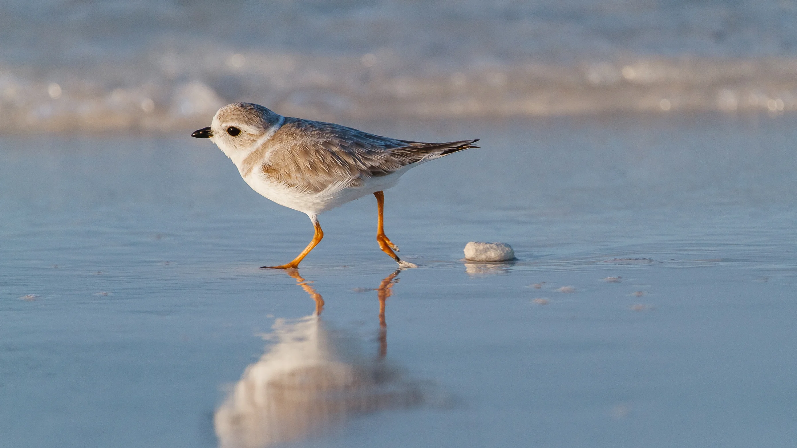
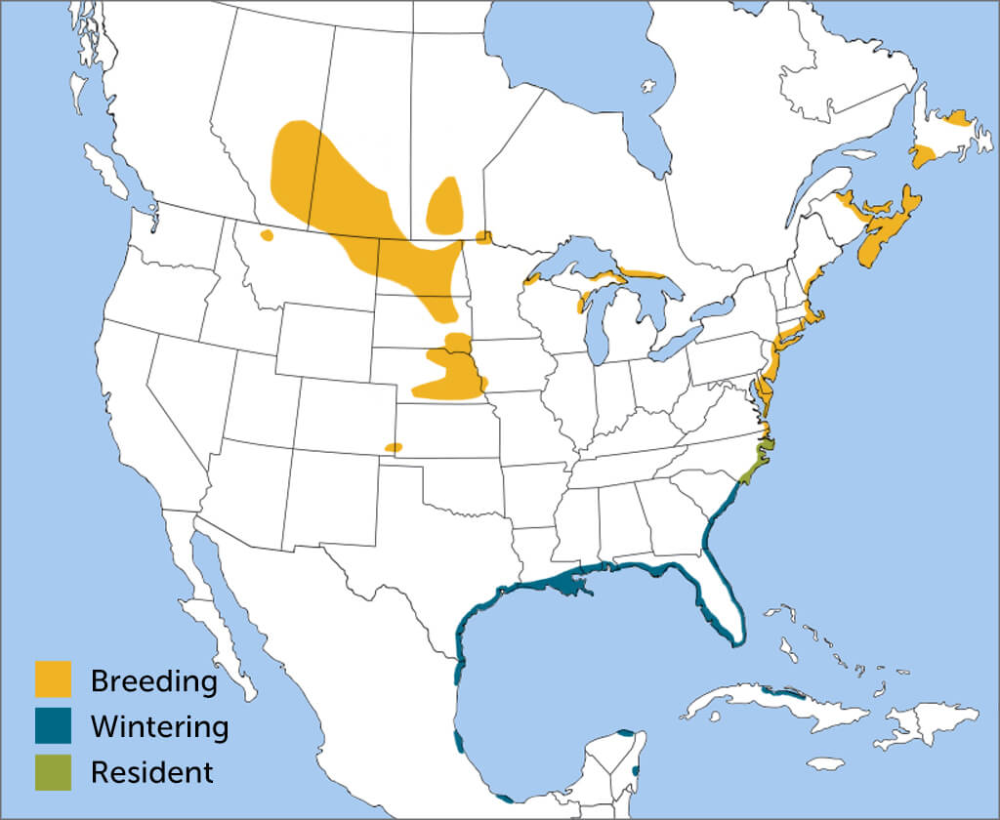
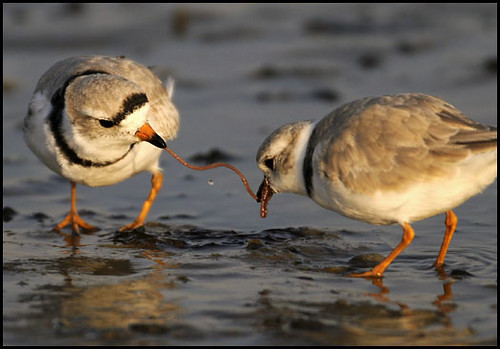

Piping Plovers are small birds that nests and feeds along the shores of North America. Since December 11, 1985, Piping Plovers were listed as endangered as the population decreased. Plans are currently in motion to help decrease the dangers and provide safe breeding grounds for these small shorebirds.
Habitat

Piping Plovers are found along the Atlantic coast and the shores of the Great Lakes. They thrive on safe and clean beaches. When winter time comes, they migrate down to the Gulf Coasts, southern Atlantic, Cuba and Bahamas.
Food

Piping Plovers' diet relies on the shores around them. Piping plovers feeds on:
marine worms
small crustaceans
insects
small beetles
shore flies
midges
Calls
Piping Plover Calls
Piping Plover Courtship Calls
Conservation
Ways to help protect and conserve the population of the Piping Plovers.